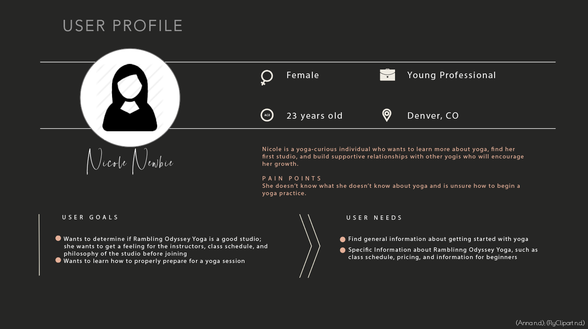
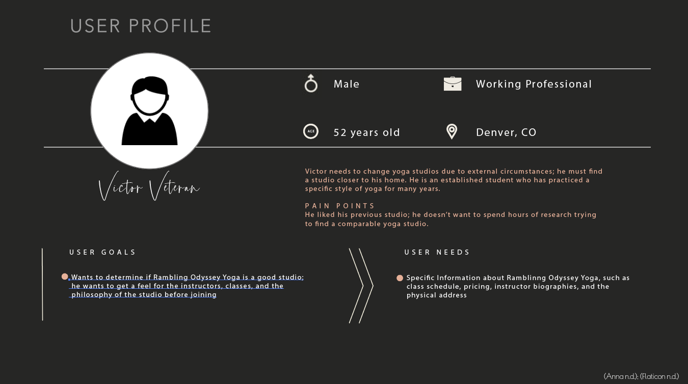
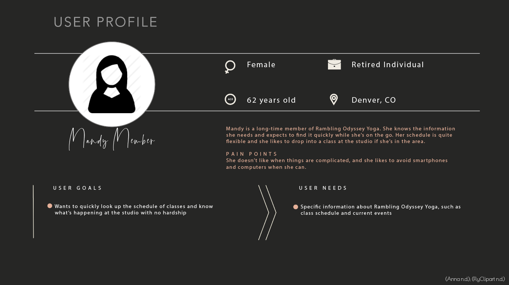

Project Description
Fictional Client Amanda needs a website to showcase the services her yoga studio, Rambling Odyssey Yoga, offers. In addition, her website needs to include information about her as an instructor, information about the dates and times she offers classes, as well as pricing information. Amanda also wants a section of her site where she can write news updates or articles about the things going on at her studio, such as welcoming new students, keeping her followers up to date on her community involvement, and letting her students know about special offers and promotions.
Business Needs
Amanda wants to keep up with the times and host a website to take her small, local yoga studio online. She hopes this website will provide the following benefits to her business:
Current Needs
- Enhance the creditability of her business through a sleek, professional presentation on a respected web-hosting platform, which is SEO compatible (Dholakiya 2019).
- Increase her local market share by helping new and prospective students located in her community find her studio (Dholakiya 2019).
- Provide a cost-effective method of communicating about her teaching style, class schedule, and special promotions or offers available through her studio (Dholakiya 2019).
Future Needs
- Enable her to grow her community by collecting data about browsing sessions and asking her site’s users to provide feedback (Dholakiya 2019).
- Increase her global market share by enabling her to provide yoga classes online via a subscription service through the site (Dholakiya 2019).
Use Cases
For her website, Amanda will require a homepage, which will link to all the child pages of her website. The homepage and each of these child pages will have a single use case written about it to detail the expected content that must be present on each page. In addition to the home page, Amanda’s site requires the following child pages: About, Calendar, Pricing, Contact, and Blog.
Use Case 01: Homepage
| Summary: | This page will link to all the child pages of Rambling Odyssey Yoga. It will serve as the landing page for when a user navigates to the website. |
| Actor(s): |
|
Pre-Conditions(s): | The user will navigate to the website’s URL |
| Description: |
|
| Exception(s): | None |
| Post-Conditions(s): | If a user clicks on one of the links to a child page, they will be redirected to that page |
Use Case 02: About
| Summary: | This child page will contain information about Amanda and her Yoga Studio, Rambling Odyssey Yoga. It will also include biographies for the two additional teachers who instruct at her studio: Simon and Laurie. |
| Actor(s): |
|
Pre-Conditions(s): | The user clicked on the link which directs to the ‘About’ page |
| Description: |
|
| Exception(s): | None |
| Post-Conditions(s): |
|
Use Case 03: Calendar
| Summary: | This child page will contain information about the types of classes Amanda and her fellow instructors offer at their studio; this page will also contain the dates and times each class is offered and what instructor will be teaching that class. |
| Actor(s): |
|
Pre-Conditions(s): | The user clicked on the link which directs to the 'Calendar' page |
| Description: |
|
| Exception(s): | If the Studio is closed, the schedule must not display any classes on that particular day (i.e., holidays, etc.) |
| Post-Conditions(s): |
|
Use Case 04: Pricing
| Summary: | This child page will contain information about the different studio membership packages that Amanda offers to her students. Pricing information will be included, as well as a comparison between membership packages. |
| Actor(s): |
|
Pre-Conditions(s): | The user clicked on the link which directs to the 'Pricing' page |
| Description: |
|
| Exception(s): | None |
| Post-Conditions(s): |
|
Use Case 05: Contact
| Summary: | This child page will contain Amanda’s contact information, including her email address and the physical address of her Yoga Studio. It will also include instructions for contacting her Simon or Laurie. |
| Actor(s): |
|
Pre-Conditions(s): | The user clicked on the link which directs to the 'Contact' page |
| Description: |
|
| Exception(s): | None |
| Post-Conditions(s): |
|
Use Case 06: Blog
| Summary: | This child page will provide Amanda and her team with a forum to write articles and post updates about the studio, their involvement in her community, and post special offers and promotions for existing and prospective students. |
| Actor(s): |
|
Pre-Conditions(s): | The user clicked on the link which directs to the 'Blog' page |
| Description: |
|
| Exception(s): | None |
| Post-Conditions(s): |
|
Stakeholders & Users
Stakeholders
The primary stakeholder for this project will be Amanda, the owner and operator of Rambling Odyssey Yoga; she is responsible for all final decisions on the design and functionality of Rambling Odyssey Yoga. In addition to Amanda, there are two other yoga instructors who teach at Rambling Odyssey Yoga: Simon and Laurie. Simone and Laurie will help Amanda think of ideas for what the website should offer, as well as support her with testing and validation efforts prior to formally launching the website.
Users
Rambling Odyssey Yoga wants their website to appeal to new and prospective students of yoga and provide valuable information for their existing members. Remembering the studio’s motto is “Yoga is for everyone” I wanted to create an array of personas that captured people of all genders, ages, and experience levels. Per the video by Jamal Nichols, I addressed the potential for stereotyping in these personas by limiting demographic information to just gender, age, and level of experience with yoga (Nichols 2018). Additional sensitive and protected details about potential users of this website are not required for building a beautiful and functional website for Rambling Odyssey Yoga. I outlined three personas based on my conversations with the team from Rambling Odyssey: Nicole Newbie, Victor Veteran, and Mandy Member. They are provided on the subsequent pages in Figures 1-3.
Figure 1: Final Persona A: Nicole Newbie
Users who fall into the category of the Nicole Newbie persona are generally new to yoga or unsure of what they want to get out of a yoga practice. The Nicole Newbies would leverage Rambling Odyssey Yoga to learn about different styles of yoga, the philosophy of this studio, and would likely find a lot of value in the studio’s blog, which would help them know what to bring to their first class and what to expect when they get started. Rambling Odyssey Yoga hopes their website will capture the Nicole Newbies who are browsing and help them find the confidence to check the class schedule and pricing model, so they feel comfortable dropping in for a class.
Figure 2: Final Persona B: Victor Veteran
Users who fall into the category of the Victor Veteran persona are generally more experienced in practicing yoga and know what to expect from a yoga practice. The Victor Veterans would leverage Rambling Odyssey Yoga to learn about the styles of yoga offered at the studio, the studio’s philosophy, and to learn about class schedules and pricing. Generally, they would not be as interested in the studio’s blog because they aren’t looking for tips and advice for beginners. If they leverage the blog, it would likely be to get a feeling for the instructors and the class members of the studio.
Figure 3: Final Persona C: Mandy Member
Users who fall into the category of the Mandy Member persona are users who already belong to Rambling Odyssey Yoga. The Mandy Members would leverage Rambling Odyssey Yoga to find information about classes being offered on a given day or to learn about fun events and promotions going on for members. As the website grows and if Rambling Odyssey Yoga begins offering online yoga classes, Mandy Members would leverage the website to access this content.
I’ve provided references in the Additional References section of this paper for all the articles and samples that inspired the stylization of these personas. The template I used to create the final personas was created for Adobe Stock by Anna, a talented site user (Anna n.d.).
Project Requirements
The business requirements for this website will be broken into Functional and Non-Functional requirements. Functional requirements are those which define the behavior of a system, while non-functional requirements describe the attributes or limitations of a system (Ganji 2018). Additionally, each requirement will be associated to the use case it supports. The following business requirements will be fulfilled:
| # | Type | Description | Use Case |
|---|---|---|---|
| REQ-01 | Non-Functional | All pages of the website MUST contain a header with Rambling Odyssey logo and business name | UC-ALL |
| REQ-02 | Functional | All pages of the website MUST contain a navigation bar with functioning links to each of the child pages | UC-ALL |
| REQ-03 | Functional | All child pages of the website MUST contain a functioning link back to the homepage | UC-ALL |
| REQ-04 | Non-Functional | All pages of the website MUST contain a footer with address and phone number for the yoga studio | UC-ALL |
| REQ-05 | Non-Functional | Homepage MUST contain an image related to yoga | UC-01 |
| REQ-06 | Non-Functional | About Page MUST contain a section about how the yoga studio got its start | UC-02 |
| REQ-07 | Non-Functional | About Page MUST contain a section for information about each yoga instructor teaching at the studio | UC-02 |
| REQ-08 | Functional | Calendar Page MUST contain an interactive schedule module that will list important details about the classes being offered (i.e., date, time, class name, instructor name, class level) | UC-03 |
| REQ-09 | Non-Functional | Pricing Page MUST contain an area to display the various pricing packages for the different membership options offered by the studio | UC-04 |
| REQ-10 | Non-Functional | Contact Page MUST contain a section to display the physical address, phone number, and email address for the yoga studio | UC-05 |
| REQ-11 | Functional | Contact Page MUST contain a webform for contacting individual instructors at the studio | UC-05 |
| REQ-12 | Non-Functional | Blog MUST contain a layout of 3x3 tiles featuring the articles in the blog | UC-06 |
| REQ-13 | Functional | Blog MUST contain a functioning link to older articles | UC-06 |
Success Measures
Rambling Odyssey Yoga wants to measure the success of their new website, independent from the services their yoga studio offers. In order to achieve this measure, they are going to look at site performance, user interaction with the website, and growth in usership. The measures for success for Rambling Odyssey Yoga’s website will be defined by the following parameters:
- Number of Website Visitors Per Month: This metric will measure the number of unique visitors for Rambling Odyssey Yoga each month; the Rambling Odyssey team would like to achieve a 10% growth rate in the number of unique visitors using their website over a six-month period (Wahhab 2015).
- Visitor-to-Lead Conversion Rate: This metric will measure the number of unique visitors for Rambling Odyssey Yoga who purchase a membership package with the studio; the Rambling Odyssey team would like to average a 3% visitor-to-lead conversion rate after the first six months the site is operational (Wahhab 2015).
- Bounce Rate: This metric will track the number of people who read only one page on Rambling Odyssey Yoga before leaving the site; the Rambling Odyssey team would like to see this number remain below 50% (Wahhab 2015).
- This metric will measure the number of months it takes for the revenue generated from membership packages sold on the website to exceed the cost of creating the webpage; the Rambling Odyssey team would like to see a return on their investment in the website by the second month of operation.
Competitors
Based on an article written by Artem Arefin and Miroslav Kraynik, a designer and web developer, I will evaluate the list of the best websites for yoga from 2019 as this course progresses to inspire design decisions and promote a high-quality user experience. The criteria for good design will include decisions related to creativity, how content is displayed, layout, and site content (Arefin and Kraynik 2018). User experience will relate to the site’s ability to display in a web browser and on a mobile device, load speeds, and caching (Arefin and Kraynik 2018).
Arefin and Kraynik provide ten examples of Yoga websites that boast sleek design and provide a positive user experience. To narrow down the sites I will use for reference, I have selected only three to use as focus throughout my research; these sites will inspire design ideas and guide what type of content Amanda might require for her website. These sites are:
- Jessamyn Stanley
- Core Power Yoga
- Better Buzz Yoga
Each of these three websites share the same strengths of having a beautifully designed website that boasts an intuitive and responsive user experience. The color schemes are very different, but they are vibrant, peaceful, and fitting to the website. Additionally, they offer information about yoga in a straightforward manner.
There are a few weaknesses on each of the websites. For example, Jessamyn Stanley’s website places a full-screen image at the forefront when you first land on her page (Stanley n.d.). It takes the user a moment to realize they need to scroll down for more information. Additionally, her menu is in an odd place at the far left-hand side of the screen, which may be hard for some users to find (Stanley n.d.). Core Power’s homepage is a little bland and their menu is hidden in the top-right corner of their site with a hamburger menu (CorePower Yoga Staff n.d.). The Better Buzz Website is just a long, scrolling window. The links at the top of their menu just redirect you to a certain point in the long page; you don’t have separate pages for all their information, which might not be the most positive user experience for someone navigating their webpage.
Risks
The high level risks associated with undertaking this project are detailed below:
| # | Risk Description | Category | Impact Description | Mitigation Notes |
|---|---|---|---|---|
| RSK-01 | The client runs out of money or chooses not to pay the development team for the website. | Budget | If the client runs out of money for further development or does not pay the development team for their efforts, the team will be negatively impacted by the loss of revenue. | The development team will adopt an iterative delivery schedule where the client will pay for the website in a series of payments. Before the final website is released to the client, the development team will make sure they have received final payment for their services. |
| RSK-02 | As the client views the different iterations of the website being built for them, they may have additional ideas about features or enhancements they would like to see added to the design. | Scope | If the client continues to add new features and enhancements, scope, to the project, the development timeline will continue to extend and may exceed the client's expected deadline. | To protect the development team from scope creep, the initial agreement with the client will be decided up front. Once the contract is signed and the requirements are agreed upon, additional features and enhancements will be undertaken after the initial work is delivered for the project. |
| RSK-03 | In order to assist the client in meeting their desired outcomes for launching a website, the development team only has ten weeks to finalize requirements, reach an agreement with the client, and provide an initial working website for the client. | Schedule | If the website cannot be delivered to the client by the date agreed upon, the development team will no longer be viewed highly by the client and may see their reviews (i.e., grades) decrease as a result. | To avoid unexpected delays to the project, the development team will follow the schedule outlined in ICT-4305 Website Design and Management. Each assignment builds towards a final, working website for the client. It will be the goal of the development team not to miss a deadline. |